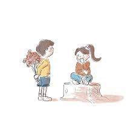
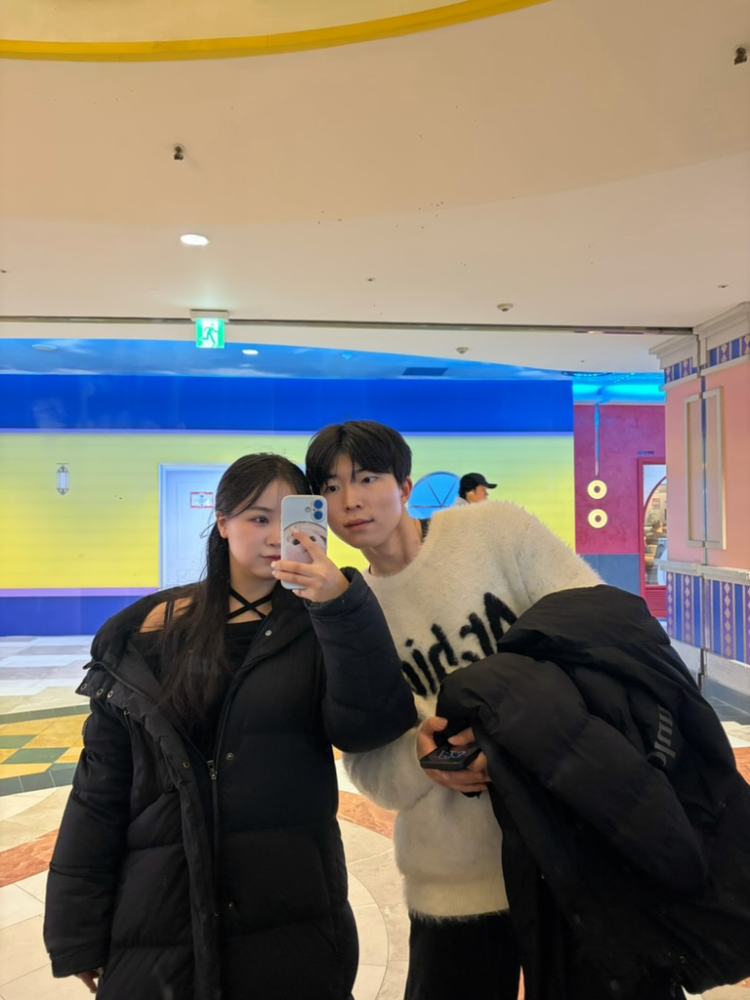
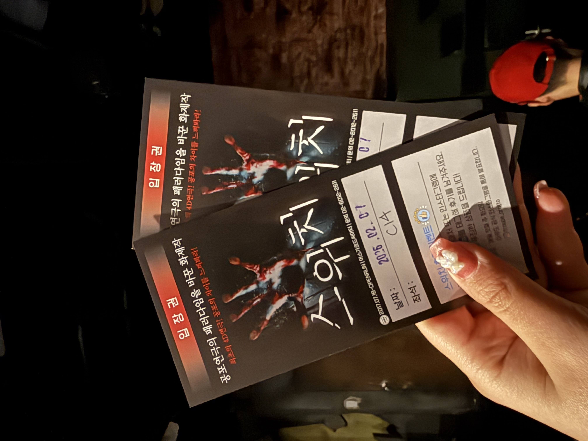
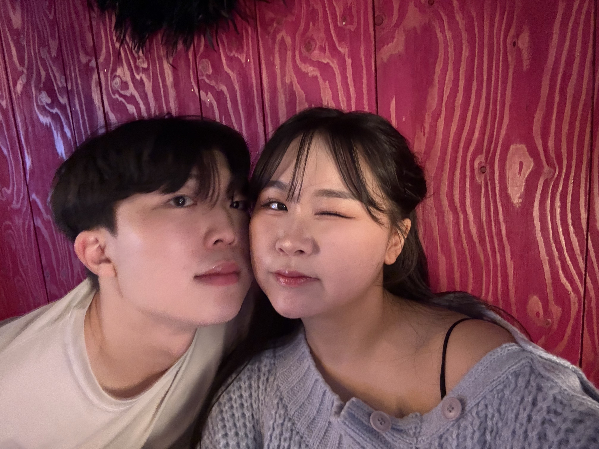
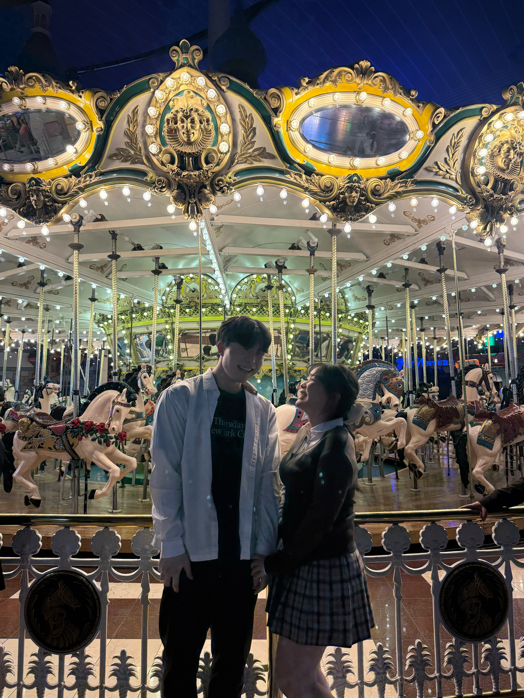

💌
새로운 추억
기록하기
기록하기

2026-01-01
드디어 고백을 했다! 너무나도 떨리는 심정에 미룰까도 고민했다가, 더 이상 미루고 싶지 않아 고백을 하였다. 그 당시 심장 박동수는 나에게
들릴 만큼 두근거렸지만, 나의 진심을 담아 고백을 했고 받아 준 순간 세상을 다 얻은 것만 같은 기분이었다. 잊지 못할 새해 첫날이었다

2026-01-10
우리의 첫 데이트는 잠실 아쿠아리움에서 시작됐다 귀여운 바다 동물들이 많았고 그걸 바라보고 있는 우리의 모습도 너무 이쁜 것 같았다 바다
동물들을 다 보고 두 번째 장소인 롯데월드몰 스케이트장으로 가서 스케이트를 탔는데 생각보다 내가 너무 못 타고 나의 여자친구가 잘 타는 남녀가 뒷바뀐 상황이 만들어져서 조금
부끄러워지만 그 모습 마저 좋아해주는 여자친구가 너무 좋았다

2026-01-17
잠실에 이어 두 번째 데이트는 어린이 대공원에서 시작했다 공원을 걷고 아기자기한 동물들을 구경하니 마치 어린 시절로 돌아간 기분이었다
짜릿했던 놀이기구도 타며 웃음소리를 듣는 것이 즐거웠다
해 질 녘 간 파주 퍼스트가든은 그 야말로 너무 아름다웠다 캄캄한 어둠 속에 빛나는 조명들이 마치 우리 둘을 더 빛나게 해 주는 느낌이었다

2026-01-23
오늘은 향수 공방에서 서로에게 가장 잘 어울리는 향기를 만들어 주기로 했다 수많은 향기들 속에서 여보랑 잘 어울린 향기를 찾기는 향수를 잘
모르는 나에겐 너무 어려운 일이었다 그래도 최선을 다해 향기를 찾고 만들었고 다행히도 여보가 마음에 들어 하는 것 같아 뿌듯했다

2026-01-31/02-01
가평 커플 동반 여행, 설렘 가득했던 1박 2일
친구들 커플과 함께 총 세 커플이서 떠난 가평 여행. 북적북적한 분위기 속에서 오리엔테이션 게임도 하며 즐거운 시간을 보냈다. 여행의 꽃은 역시 바베큐! 나랑 동규형님이 고기를
구웠는데, 뜨거운 불 앞에서 고생한다며 여자친구가 정성스럽게 쌈을 싸서 입에 넣어주었다. 그 순간의 고마움과 따뜻함은 잊지 못할 것 같다. 맛있는 고기에 술 한 잔 곁들이고,
타오르는 장작을 보며 즐긴 불멍까지 완벽했다.다음 날 아침에는 산정호수로 향했다. 꽁꽁 얼어붙은 호수 위에서 얼음 썰매를 탔는데, 생각보다 팔 힘이 많이 들어서 앞으로 나가는 게
쉽지 않았다. 낑낑대며 썰매를 탔지만, 그마저도 여자친구와 함께라 웃음이 끊이지 않았던 행복한 시간이었다.

2026-02-07
오늘 여자친구와 함께 생애 첫 연극 데이트를 즐겼다. 인생의 첫 연극을 가장 사랑하는 사람과 함께할 수 있다는 사실만으로도 공연장에 가기
전부터 마음이 무척 설레었다.우리가 선택한 작품은 공포 연극으로 유명한 '스위치'. 공연장에 들어서자마자 느껴지는 서늘한 공기와 제목이 주는 압박감에 나도 모르게 마른침을 삼키며
긴장했다. 하지만 막상 연극이 시작되니 쉴 새 없이 몰아치는 공포 속에서도 중간중간 터지는 유쾌한 코미디 요소 덕분에 긴장과 웃음이 반복되는 묘한 매력에 푹 빠져버렸다.무서운
장면이 나올 것 같을 때면 나는 소심하게 실눈을 뜨고 무대 위를 살폈고, 옆에 있던 여자친구는 무서웠는지 내 팔을 꼭 껴안으며 내 품으로 파고들었다.그 때 나는 혼자 입가에 미소가
번졌다.
어두운 암전 속에서 서로의 온기를 느끼며 의지했던 그 시간들. 무서운 건 딱 질색이지만, 여자친구와 함께라면 이런 스릴 넘치는 공포 연극도 얼마든지 다시 볼 수 있을 것 같았다.

2026-02-10
오늘은 여자친구와 함께 포천의 마이애니멀스토리(평강랜드)로 나들이를 다녀왔다. 귀여운 동물들을 가까이에서 보고 먹이도 주며 아이처럼 즐거운
시간을 보냈다. 가장 기억에 남는 건 얼굴이 털에 가려져 앞이 보이지 않던 신기한 양! 처음 보는 모습이 정말 귀엽고 신기해서 한참을 쳐다봤다. 앵무새 방에서는 앵무새에게 먹이주는
경험을 했다 여자친구는 조금 무서워해서 밖에서 예쁜 사진을 찍어주었고 나는 그 앵무새들에게 먹이를 주었다. 손에 엄청나게 달라붙어 쪼아대는 앵무새들의 적극적인 모습에 당황스럽기도
했지만 그마저도 즐거운 추억이 되었다. 오늘 우리가 이곳에 다녀왔다는 기록도 예쁘게 남기고 오니 마음이 뿌듯했다. 데이트의 마지막은 맛있는 오리고기! 역시 신나게 놀고 먹는 고기는
꿀맛이었다.
동물 친구들도 보고 서로의 새로운 모습도 발견하고 맛있는 것까지 먹었던 완벽한 하루! 여자친구와 함께여서 더 따뜻하고 행복했던 순간이었다

2026-02-14
오늘 여자친구와 서울랜드에 다녀왔다. 약속 장소에 조금 일찍 도착해 배가 출출했던 차에 맛있는 간식으로 가볍게 배를 채우고 본격적인
데이트를 시작했다. 놀이기구를 탈 때는 여자친구가 조금 무서워하는 것 같아 손을 잡아주었다 사실 나도 조금 무서웠다... 거리에서 우연히 만난 굴렁쇠와 제기차기 코너에서도 한참을
놀았다. 난생처음 굴려보는 굴렁쇠가 생각보다 쉽지 않아 낑낑댔지만 여자친구와 함께라 그 어설픈 모습조차 웃음거리가 되었다. 우리는 커플 머리띠를 쓰고 다정하게 사진도 남겼다.
무엇보다 오늘 가장 행복했던 순간은 여자친구에게 비눗방울을 선물했을 때다. 영롱한 비눗방울 사이로 세상에서 가장 신나게 웃는 여자친구의 모습을 보고 있으니 내 마음까지
몽글몽글해지는 기분이었다.
2026-02-18
오늘은 여자친구와 함께 시간을 되돌려 한국민속촌으로 나들이를 다녀왔다. 곱게 한복을 차려입고 옛 정취가 물씬 풍기는 거리를 나란히 걷고
있으니, 마치 사극 속 주인공이 된 듯한 기분이 들어 설레었다.
의외의 재능을 발견한 건 빙어 잡기 체험 때였다. 설마 잡히겠어? 하는 마음으로 시작했는데, 여자친구와 나 둘 다 생각보다 너무 많이 잡아서 서로 깜짝 놀라며 시간 가는 줄 모르고
몰입했다. 출출해질 때쯤 우리가 직접 잡은 빙어를 튀기고, 따끈한 분식까지 곁들여 먹으니 그야말로 꿀맛이었다.
해가 저물자 민속촌은 또 다른 세상이 되었다. 은은한 조명이 켜진 야경 속에서 한복을 입고 사진을 찍었는데, 배경과 옷이 완벽하게 어우러져 정말 예쁘게 담겼다. 그 모습이 너무
아름다워 한참을 넋 놓고 바라보게 되더라. 신명 나는 공연도 관람하고, (비록 나만 맞았지만!) 곤장 맞기 체험을 하며 한바탕 크게 웃기도 했다.
데이트의 대미를 장식한 곳은 자동차 극장. 우리만의 독립된 공간에서 치킨을 뜯으며 영화를 보니 세상에 우리 둘만 있는 듯한 오붓함이 느껴져 참 좋았다. 과거의 낭만과 현대의
편안함을 모두 만끽한, 완벽하게 행복한 하루였다.

2026-02-18
오늘은 여자친구와 함께 실내 동물 테마파크인 하남 주렁주렁으로 데이트를 다녀왔다. 평소 책이나 화면으로만 보던 동물들을 울타리 없이 아주
가까운 거리에서 마주할 수 있다는 사실만으로도 가슴이 두근거렸다.
가장 기억에 남는 장면은 단연 동물들에게 직접 먹이를 주던 순간이다. 처음에는 작은 입들이 내 손 근처로 다가오는 게 조금 무섭기도 하고 얼떨떨했지만, 오물오물 맛있게 받아먹는
귀여운 모습에 금세 긴장이 풀리고 기분이 좋아졌다. 생명의 온기가 손끝에 닿는 그 느낌이 참 따뜻했다.
운 좋게도 현장에서 유명 유튜버를 마주치는 깜짝 이벤트도 있었다! 신기한 마음에 조심스레 인사를 건넸는데, 반갑게 인사를 받아주셔서 데이트의 흥이 한껏 더 올랐다.
한 가지 아쉬운 점이 있다면, 곳곳에 준비된 스탬프 미션이 있었음에도 동물들의 매력에 푹 빠져 정신없이 구경하느라 미처 다 완료하지 못했다는 것. 하지만 미션보다 더 소중한
여자친구의 웃음소리와 동물들과의 교감으로 마음만은 꽉 찬 하루였다. 못다 한 미션은 다음에 다시 와서 꼭 완수하기로 약속해 본다.

2026-02-18
이번 데이트는 짐찔방에서 시작했다 원래의 목표는 '찜질방 삼겹살'이었지만, 아쉽게도 시간이 늦어 다음을 기약해야 했다. 하지만 아쉬움도
잠시, 시원한 술 한 잔에 곁들인 치킨이 그 빈자리를 완벽하게 채워주었다 찜질방 안은 생각보다 놀거리 천국이었다! 오락실에서 승부욕을 불태우며 게임도 하고, 코인 노래방에서 목청껏
노래도 부르며 스트레스를 날려버렸다. 찜질방의 '국룰'인 식혜와 삶은 계란도 빼놓을 수 없지. 서로의 머리에 계란을 툭 깨트리며 장난치던 그 소소한 순간이 얼마나 웃기고 행복했는지
모른다.따끈하게 찜질을 마치고 푹 자고 일어난 아침, 개운하게 목욕을 하고 향한 곳은 연극 공연장. 두 번째로 함께 보는 연극이었는데, 생각보다 수위가 높고 야한 장면이 많아 살짝
당황스럽기도 했다. 하지만 사랑하는 여자친구와 나란히 앉아 함께 웃고 즐기니, 그마저도 우리만의 특별하고 짜릿한 추억이 되었다.

2026-02-18
오늘은 우리 집 귀염둥이 뚜이 그리고 사랑하는 여자친구와 함께 넓은 마당이 매력적인 애견 카페로 향했다. 뚜이가 마음껏 에너지를 발산하며
뛰어놀기에 더할 나위 없이 충분한 공간이라 도착하자마자 기분이 좋아졌다. 우선 금강산도 식후경! 뚜이의 허기를 달래주기 위해 요즘 강아지들 사이에서 핫 하다는 멍푸치노와 강아지용
닭가슴살 볶음 요리를 주문했다. 우리도 출출한 배를 채우려 매콤달콤한 떡볶이를 시켰다. 처음엔 낯선 비주얼 때문인지 멍푸치노를 거부하던 뚜이가, 거품이 살짝 가라앉고 나자 언제
그랬냐는 듯 폭풍 흡입하는 모습에 안도의 미소가 지어졌다. 든든하게 배를 채운 뒤, 다른 강아지 친구들과 어울려 놀 수 있도록 넓은 운동장에 뚜이를 풀어주었다. 하지만 우리 겁쟁이
뚜이는 다른 친구들에겐 눈길도 주지 않고 오직 내 뒤만 졸졸 따라다녔다… 결국 드넓은 운동장에서 뚜이는 다른 친구들이 아닌 나랑만 실컷 놀게 되었지만 나만 바라보는 그 순수한
마음이 느껴져 오히려 더 사랑스러웠다 비록 친구 사귀기 미션은 절반의 성공이었지만 여자친구와 뚜이, 그리고 내가 함께 웃고 즐길 수 있어 참 따뜻하고 소중한 주말이었다

2026-02-18
오늘은 홍대에서 여자친구와 아주 특별한 데이트를 즐겼다. 평소 카페를 그리 즐기지 않는 여자친구가 웬일인지 꼭 가보고 싶다며 나를 이끈
곳은 바로 '코코넛박스' 카페였다.
입장하자마자 마치 물놀이장처럼 드넓게 펼쳐진 볼풀들이 우리를 반겼다. 우선 맛있는 빵과 케이크로 배를 든든히 채운 뒤 곧장 볼풀 속으로 뛰어들었다. 서로 공을 던지고 빠뜨리며 놀다
보니, 주변의 아이들보다 우리가 더 신이 나 있었던 것 같다. 그러다 실수로 여자친구 얼굴에 공을 맞히는 대형 사고를 쳤다. 여자친구가 순간 화가 난 듯 보였지만, 내가 진심을
다해 반성하는 태도를 보이자 다행히 웃으며 기분을 풀어주었다. 우리는 그렇게 한참을 더 동심으로 돌아가 즐거운 시간을 보냈다. 저녁에는 웃음의 정점을 찍으러 메타코미디 클럽으로
향했다. 김동하 콘서트를 보기 위해서였다. 테이블에서 음식을 즐기며 공연을 볼 수 있다는 점은 좋았지만, 콜라 한 잔에 5,000원이나 하는 사악한 가격에는 입이 쩍 벌어졌다.
하지만 배고픔을 이길 순 없기에 피자와 치킨을 시켜 야무지게 먹으며 공연에 집중했다. 방송으로만 접하던 김동하 님의 공연을 실제로 본 것은 이번이 처음이었는데, 정말 숨도 못 쉴
만큼 웃겨서 숨이 넘어갈 뻔했다. 다음에 또 공연이 있다면 무조건 다시 오고 싶을 만큼 완벽하게 재미있었다. 동심 가득했던 볼풀 놀이부터 배꼽 빠질 뻔한 스탠드업 코미디까지,
웃음으로 꽉 찬 완벽한 홍대 데이트였다

2026-04-14
오늘의 데이트는 잠실 롯데월드에서 아주 특별하게 시작했다. 입장하기 전, 설레는 마음으로 교복을 대여해 입었다. 거울 속 교복 입은
서로의 모습을 보니 마치 학창 시절로 돌아간 듯한 기분도 들고, 마음만큼은 몇 년은 더 젊어진 것 같아 발걸음이 한층 가벼워졌다.
롯데월드에 들어서자마자 가장 먼저 한 일은 교복 입은 예쁜 모습을 사진으로 남기는 것이었다. 롯데월드의 유명한 사진 명소에서 서로를 바라보며 다정하게 추억을 한 장 채워 넣었다.
슬슬 출출해질 때쯤 먹은 콜팝은 놀이공원의 맛을 고스란히 느끼게 해주었다.
걱정했던 것과 달리 생각보다 사람이 많지 않아서 한 시간에 하나 정도는 무난하게 놀이기구를 탈 수 있었다. 특히 이번에는 롯데월드가 메이플스토리와 콜라보를 하고
있어서 재미가 배가되었다. 마치 메이플 세상 속으로 들어가 직접 모험을 떠나는 여행자가 된 듯한 기분이 들어 눈이 쉴 새 없이 즐거웠다.
열심히 놀이기구를 3개쯤 타고 나니 체력이 방전되기 시작했다. 마지막 체력을 쥐어짜 내어 롯데월드 데이트의 필수 코스인 저녁 회전목마 앞으로 향했다. 은은하고 화려한 조명 아래서
아름다운 피날레 사진을 남긴 뒤, 교복을 반납했다.풋한 교복 데이트에 환상적인 모험까지, 오늘도 여자친구와 함께 완벽하게 행복한 하루를 보냈다